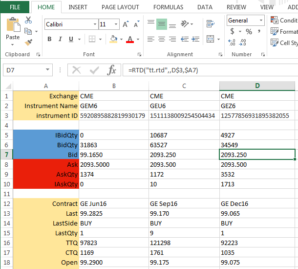

The TT RTD Server allows traders to display live data from TT (market data, position, etc.) in an Excel spreadsheet. The TT RTD Server supports two types of properties you can retrieve from TT:
For example, the following spreadsheet uses the TT RTD Server to populate the cells with market data for three GE instruments (Jun16, Sep16, Dec16) from the CME exchange. As market data for any of the instruments change, the values update automatically in the spreadsheet.

Note: To use the TT RTD Server, you first need to install the TT Excel Add-In for Microsoft Excel 2010, or higher. For information, see Excel Integration with TT: Overview.
TT provides a sample RTD spreadsheet that you can use as a template for creating your own spreadsheet. The sample spreadsheet shows how to define Excel formulas that retrieve instrument IDs, retrieve instrument property values and apply account filters.
The TT Excel Add-in installation downloads the TT RTD Sample.xlsx file to the Desktop. TT recommends that you copy the file to a different location and modify the copy as the original will be overwritten when newer versions are installed.